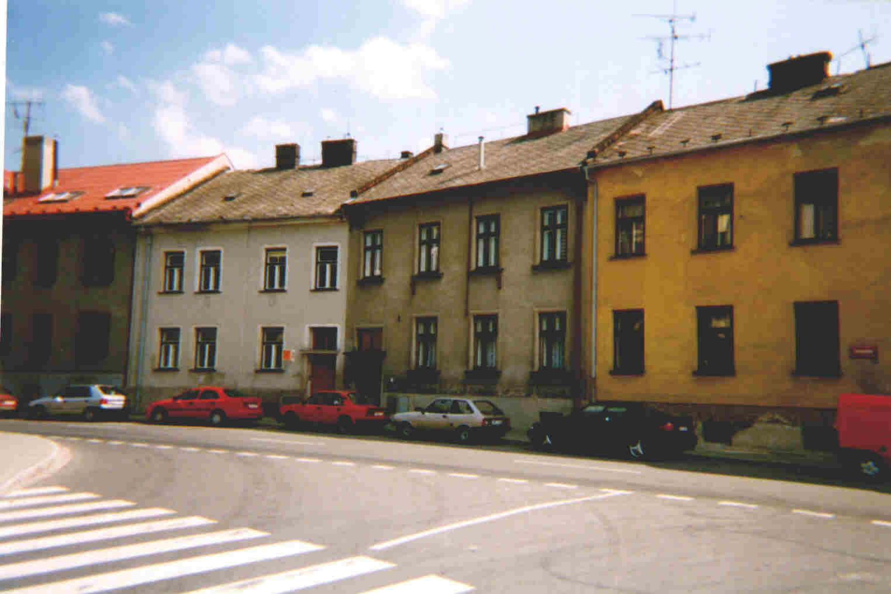
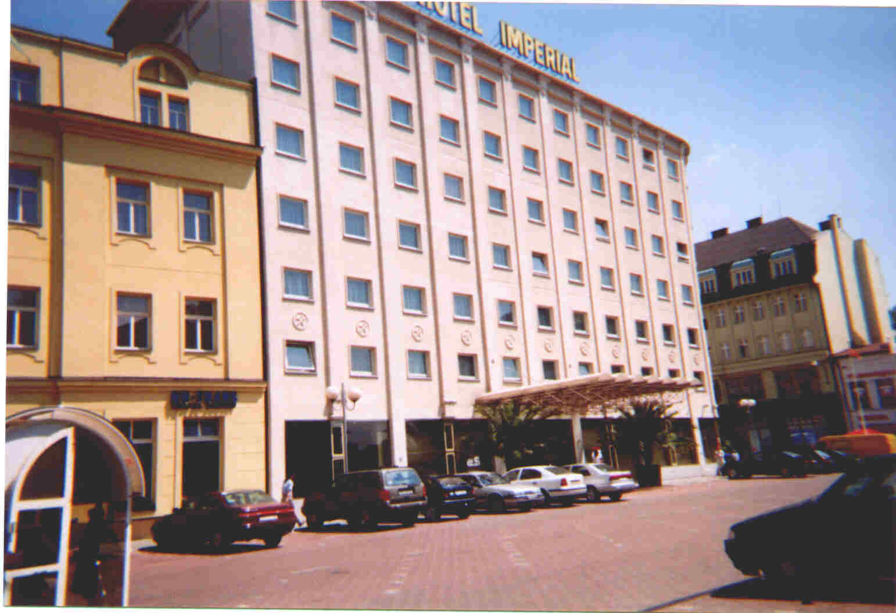
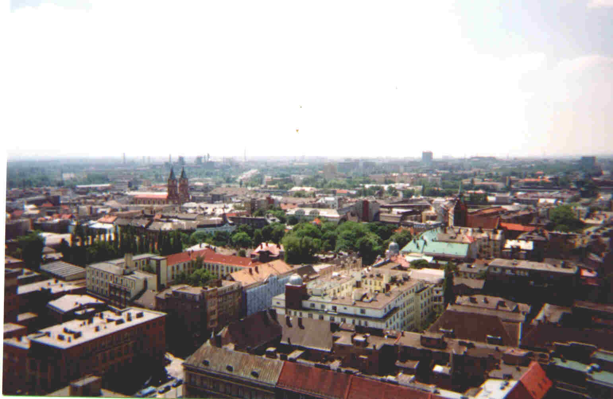

2 Fotos von MC
aus Opava wurden zum Artikel hinzugefügt. Außerdem wurden zum Teil
fehlerhafte Beschreibungen des Autors dieses Artikels von Frau MC und Frau Marie
Bardon (Franz Bardon's Tochter) richtiggestellt.
Ich möchte hier noch einmal in aller Deutlichkeit darauf hinweisen,
daß die derzeitigen Mieter der Wohnungen in Ruhe
gelassen werden wollen !!!
Gleiches gilt auch für Familie Bardon ganz generell; es ist unbedingt notwendig,
diese Aufforderung zu befolgen. (Paul Allen, Oktober 2000)
Anmerkung: dieser
Artikel stammt nicht von Paul Allen sondern von einem Autor, der ungenannt bleiben
möchte.
Von einem Menschenfreund,
September 1999.
Als ich mich auf meinen spirituellen Weg gemacht habe, bin ich natürlich zwischen vielen anderen Möglichkeiten auch auf Franz Bardon gestoßen, den ich bis heute mit großem Respekt in meiner Philosophie einbeziehe. Meine Berufung ist es auf eine andere Art und Weise, nämlich im Freistilschamanissmus auf die Menschen zu wirken und mich fort zu entwickeln. Die Lehren von F.B. jedoch haben einen wesentlichen Anteil an meiner Entwicklung beigetragen.Da ich bei jedem Tun den Dingen auf den Grund gehe war es natürlich bei F:B. ebenso.
Vor einiger Zeit machte ich mich auf, um auf den Spuren von F.B. zu wandeln. Ich fuhr nach Prag, Ostrava und nach Troppau/Opava. Was es da zu sehen und zu hören gab war beeindruckend.Um das Wirken von F:B. zu erleben habe ich meine Möglichkeiten genutzt und sogleich traf ich in Opava einen alten Mann, der mich in deutscher Sprache empfing und unaufhaltsam über F.B. sprach. Mitten in seinen Ausführungen stoppte er plötzlich und fragte, "Franz bist du das?" ich war erst erschrocken, dann aber lachten wir beide. Weiter sagte er "Franz hat schon immer irgendwelche unglaublichen Dinge gemacht, es hätte doch sein können oder?"; ich pflichtete ihm bei. Dies war ein ganz geringer Teil von dem was es da so alles zu erleben gab. Einen Reisebericht habe ich aus Zeitgründen nicht erstellt. Einige Fotos von der Reise jedoch übersende ich Dir als Zeichen des Dankes für den Dienst an der großen Sache.
Auf Bild 1 siehst Du das Haus in dem Franz Bardon früher seine Praxis hatte,
nicht weit vom Stadtzentrum von Opava. Es ist das zweite Haus von rechts, erster
Stock.

(Bild 1)
Bild 2 und 3 zeigen das Haus in dem Franz Bardon mit seiner Frau gelebt hat, und in dem Bardon's Frau Marie Bardon bis zu ihrem Tod im Jahr 1998 gewohnt hat. Es befindet sich im Viertel Kylesovice gegenüber dem Friedhof, wo sich das Grab von Franz Bardon (auf den link klicken um ein Foto von Bardon's Grab zu sehen) befindet. Damals war es noch ein Dorf. (Fotos von Frau MC aus Opava, 1999. Nochmals: die derzeitigen Mieter sind in Ruhe zu lassen !!!).
Das Geburtshaus von Franz Bardon in Opava-Katerinky gibt es nicht mehr. Dort steht jetzt eine Neubausiedlung. Bardon wohnte kurz auch im Stadzentrum in einem Haus neben dem Krankenhaus, wo er kurz als Verwalter arbeitete. Die Eltern von Franz Bardon wohnten noch in einem anderen Haus, das vielleicht noch existiert.
(Bild 2)

(Bild 3)
Das 4. Bild zeigt die Landschaft in der F.B. seine magischen Arbeiten praktiziert hat.

(Bild 4)
Bild 5: Wer Frabato
kennt, weiß was im Hotel Imperial alles gelaufen ist.
Das Hotel ist zwar umgebaut aber F.B. lebt auch in dieser Umgebung weiter.

(Bild
5)
Zu Bild 6 Ostrava ist auch nicht viel hinzuzufügen oder?

(Bild
6)
Große Fortschritte und tiefe Erkenntnisse wünsche ich Dir.
Meine Gedanken und Wünsche sind bei den Schülern von Franz Bardon.
Zurück
zu Franz Bardon Research.

This page hosted
by  Get your own Free Home Page
Get your own Free Home Page